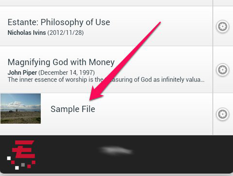

How can I add new content to Estante?
You can easily add new resources from your device that are compatible with Estante.
Instructions
- From the Estante Library, determine which category you wish to keep the new content in. In this example, we’ll add a new document.
- Under the Documents heading, tap “Add File”
- Add title for the document, then tap on the “Choose File” button to find the document you wish to add.
- You will need to find the document from your device’s file storage. You may select only one file at a time.
- Once you’ve selected the file, tap the “Submit” button
- Your document will now appear in the Documents folder.
The following document types are supported by/compatible with Estante:
Documents and eBooks
- .pdf
- .epub
- .html
- .doc, .docx
Video and Audio
Images
Web Technologies
Some of the above file types may require an app to be installed on your device in order to read them. The following are suggested apps and the file types they support:
- Kindle: .pdf
- FBReader: .epub
- Think Free Office: .doc, .docx
Instructions with screen shots
You can easily add new resources from your device that are compatible with Estante.
- From the Estante Library, determine which category you wish to keep the new content in. In this example, we’ll add a new document.
- Under the Documents heading, tap “Add File”
- Add title for the document, then tap on the “Choose File” button to find the document you wish to add.
- You will need to find the document from your device’s file storage. You may select only one file at a time.

- Once you’ve selected the file, tap the “Submit” button
- Your document will now appear in the Documents folder.
